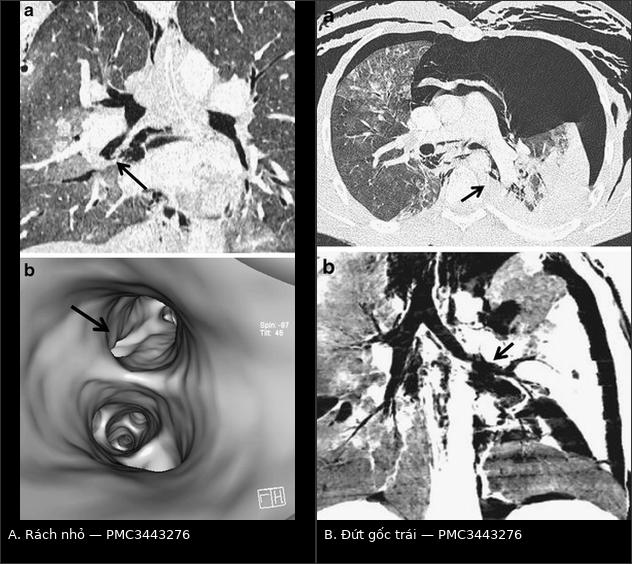
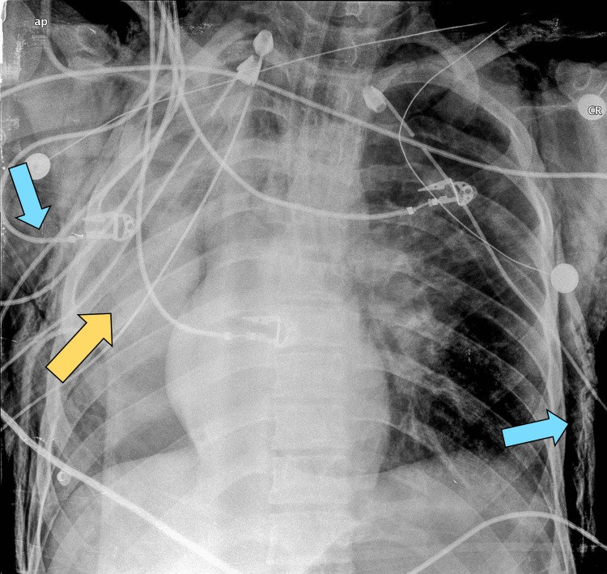
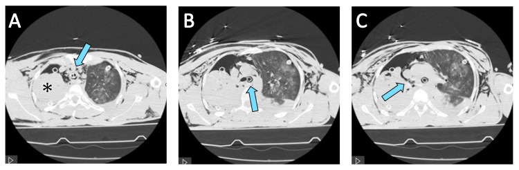

3083 — Chấn thương khí–phế quản do lực tù: "phổi rơi" (fallen lung) và tràn khí dai dẳng dù đã dẫn lưu
Tags: pattern:chan-thuong pattern:tran-khi-dai-dang pattern:fallen-lung pattern:tran-khi-trung-that vung:khi-quan vung:phe-quan vung:phoi vung:trung-that anatomy:khi-quan protocol:CT-lat-mong protocol:MinIP protocol:noi-soi-phe-quan
Mức chắc chắn (certainty): tổng hợp y văn (literature synthesis) — ghép ca đứt phế quản gốc phải 16 tuổi sau tai nạn mô tô, xẹp phổi dai dẳng dù hai dẫn lưu (Cureus 2025, PMC11875394), ca vỡ phế quản gốc phải 26 tuổi do tường đổ (Clin Case Rep 2019, PMC6333061), loạt 73 ca chấn thương phế quản mổ ngực (World J Clin Cases 2022, PMC9210895), loạt 4 ca (J Thorac Dis 2024, PMC11494571) và tổng quan CT chấn thương ngực có hình fallen lung/MinIP (Insights Imaging 2012, PMC3443276). Bài không có ca do nhóm tự chụp.
Câu hỏi thực hành: nam 16 tuổi, tai nạn mô tô năng lượng cao, vào viện khó thở, khí dưới da; X-quang có tràn khí hai bên, đặt hai dẫn lưu; sau đó rò khí liên tục bên phải và phổi phải không nở dù dẫn lưu thông. Câu hỏi: vì sao phổi không nở, chụp gì để tìm chỗ rách, và bệnh nhân cần mổ hay có thể theo dõi? Bài chốt ba quyết định: (1) tràn khí dai dẳng + phổi không nở sau dẫn lưu = lỗ rò nằm ở đường thở lớn, không phải "dẫn lưu kém"; (2) CT lát mỏng dựng MinIP + nội soi phế quản ống mềm là cặp chẩn đoán — CT định vị, nội soi đo độ sâu/độ dài; (3) đứt hoàn thành, rò khí không kiểm soát, không thể thông khí hoặc viêm trung thất → mổ khâu bảo tồn nhu mô phổi. Nối 3057 – Vỡ khí quản sau đặt nội khí quản, 080 – Chấn thương ngực kín, 098 – Barotrauma & tràn khí do thông khí áp lực.
1. Tổng quan bệnh học – cơ chế hình ảnh: vì sao đứt ĐÚNG chỗ carina và vì sao phổi "rơi"
- Tần suất – con số quyết định mức nghi ngờ: chấn thương khí–phế quản (tracheobronchial injury, TBI) chiếm 0,2–5% bệnh nhân chấn thương ngực (PMC11494571); một loạt 3.018 ca chấn thương ngực có 73 ca tổn thương phế quản = 2,4% (PMC9210895); tổng quan CT xếp tổn thương đường thở 2,8–5,4% các tổn thương ngực (PMC3443276). Tử vong trước khi tới viện tới 80% (PMC11494571); ở nhóm tới được viện và được mổ, tử vong 6,9% (5/73) — 7,9% ở nhóm lực tù và 5,7% ở nhóm xuyên thấu (PMC9210895).
- Yếu tố nguy cơ đã ghi nhận: dị tật bẩm sinh khí quản, nữ, tuổi > 65 (PMC11494571). Cơ chế năng lượng cao (tai nạn mô tô, tường đổ, ngã cao) là bối cảnh điển hình của hai ca trong bài.
- Vị trí — "luật 2 và 2,5": chỗ rách hay gặp nhất là 2 cm trên carina (khí quản ngực) và phế quản gốc trong vòng 2,5 cm từ carina, bên phải nhiều hơn bên trái (PMC3443276). TẠI SAO đúng chỗ đó: khí quản cố định ở sụn nhẫn và carina, còn phổi treo mềm; khi cơ thể giảm tốc đột ngột, hai đầu cố định đứng yên còn khối phổi bị kéo về trước — lực xé tập trung đúng nơi chuyển tiếp. Ngoài ra nén ngực khi glottis đóng làm áp lực trong lòng đường thở tăng vọt, và thành sau màng không có sụn là điểm yếu chịu lực (cùng lý do như vỡ khí quản sau đặt ống — bài 3057).
- Ba cơ chế, ba hình ảnh khác nhau:
- Nén – bùng nổ áp lực (compression/ burst): ngực bị ép khi glottis đóng → khí không thoát → rách thành sau màng, khí thoát vào trung thất trước.
- Giảm tốc (deceleration): rách/đứt ngang tại điểm cố định (carina, phế quản gốc) → mất liên tục hoàn toàn, phổi mất treo → fallen lung.
- Nén phế quản gốc vào cột sống: tổn thương phế quản gốc phải, thường kèm chấn thương ngực nặng khác.
- TẠI SAO có dấu "phổi rơi" (fallen lung sign): bình thường phổi treo vào rốn phổi bằng phế quản, động–tĩnh mạch phổi. Khi phế quản gốc đứt/gần đứt, phổi mất "dây treo cứng", xẹp lại và rơi ra phía sau – ngoài, xa rốn phổi, tựa vào thành ngực phụ thuộc. Ngược lại, xẹp do tắc phế quản (nút nhầy, u, dị vật) vẫn dính rốn phổi và co về phía rốn. Đây là dấu gợi ý đứt phế quản gốc, không phải xẹp thông thường (PMC3443276, Hình 20).
- TẠI SAO tràn khí "dai dẳng" dù đã dẫn lưu: lỗ rò nằm trước hệ thống dẫn lưu — khí từ đường thở lớn vào khoang màng phổi nhanh hơn khả năng hút của ống, nên phổi không nở dù ống thông và máy hút hoạt động. Trong ca PMC11875394, rò khí liên tục bên phải kèm xẹp hoàn toàn phổi phải là lý do đặt chỉ định nội soi phế quản cấp; khí máu lúc đó P/F < 100, PCO₂ 90 mmHg, pH 7,2.
- TẠI SAO khí trung thất một mình KHÔNG đặc hiệu: cơ chế Macklin (vỡ phế nang → khí theo bao mạch–phế quản vào trung thất) cho hình ảnh y hệt. Tổng quan CT liệt kê khí trung thất, khí dưới da, tràn khí, tràn máu là dấu hiệu không đặc hiệu, còn khuyết thành đường thở kèm thoát khí, fallen lung và tràn khí dai dẳng sau dẫn lưu mới là dấu tương đối đặc hiệu (PMC3443276).
- Vật lý áp dụng cho trẻ: theo Hagen–Poiseuille, trở lực tỉ lệ nghịch với bán kính lũy thừa 4. Phế quản gốc trẻ đường kính 4 mm (bán kính 2 mm); phù nề làm hẹp 1 mm (bán kính 1,5 mm) → trở lực ×(2/1,5)⁴ ≈ 3,2 lần. Vì vậy cùng một vết rách, trẻ mất bù nhanh hơn và mọi can thiệp làm giảm 1 mm lòng đường thở đều là biến cố.
2. Mẫu hình + chẩn đoán phân biệt theo vị trí (gamut)
- Theo vị trí — quyết định đường mổ và cách đặt ống:
- Khí quản cổ (trên eo): khí dưới da cổ, thay đổi giọng, khó thở; đường vào cổ.
- Khí quản ngực (dưới eo tới carina, hay gặp 2 cm trên carina): khí trung thất ± tràn khí; đường vào ngực phải.
- Phế quản gốc (trong 2,5 cm từ carina, phải > trái): tràn khí dai dẳng, fallen lung, xẹp phổi không hồi phục; đường vào ngực cùng bên. Ca PMC6333061: nam 26 tuổi, tường đổ lên ngực, tràn máu–tràn khí hai bên, đặt dẫn lưu hai bên nhưng rò khí ồ ạt và phổi phải không nở, CT gợi ý vỡ phế quản gốc phải.
- Phế quản thùy/phân thùy: rách nhỏ, khó thấy trên MPR thường — cần nội soi ảo (Hình của PMC3443276).
- Theo mẫu hình — 4 kiểu trình bày:
- Khí trung thất + khí dưới da, KHÔNG tràn khí → nghĩ khí quản ngực (dễ bị đọc thành Macklin).
- Tràn khí dai dẳng + phổi không nở dù dẫn lưu → nghĩ phế quản gốc.
- Fallen lung → nghĩ đứt phế quản gốc.
- Bệnh nhân đang thở máy: rò khí quanh ống, bơm căng bóng vẫn rò → nghĩ vỡ thành sau khí quản (bài 3057), khác hẳn thể chấn thương kín.
- Bảng giá trị các dấu hiệu trên CT:
| Dấu hiệu trên CT | Cơ chế | Giá trị thực hành |
|---|---|---|
| Mất liên tục thành khí quản/phế quản trên MPR | Rách toàn thành | Chốt vào mạnh nhất; cần cửa sổ mô mềm + dựng dọc |
| Khí thoát qua chỗ rách trên MinIP dày 3–5 mm | Lỗ rò còn thông | Dấu trực tiếp, thấy rõ hơn MPR thường (PMC3443276) |
| Fallen lung sign | Phổi mất treo rốn phổi | Rất gợi ý đứt phế quản gốc, phân biệt với xẹp do tắc |
| Tràn khí dai dẳng sau dẫn lưu | Rò trước hệ thống dẫn lưu | Dấu tương đối đặc hiệu, quyết định chụp/nội soi |
| Khí trung thất, khí dưới da | Khí theo mô liên kết | Nhạy, KHÔNG đặc hiệu (Macklin, ARDS) |
| Tràn khí bụng | Khí xuống qua lỗ hoành | Bẫy: dễ bị đọc thành thủng tạng rỗng |
3. Bảng so sánh phân biệt (ma trận đối chiếu)
| Thực thể | Hình ảnh điển hình | Chốt vào (rule-in) | Chốt loại (rule-out) | Gợi ý xác nhận |
|---|---|---|---|---|
| Đứt phế quản gốc do lực tù | Mất liên tục phế quản ≤ 2,5 cm từ carina, fallen lung, tràn khí dai dẳng, khí trung thất | Rò khí liên tục + phổi không nở dù dẫn lưu thông + fallen lung | Phổi nở hoàn toàn sau dẫn lưu, không rò khí → loại | CT lát mỏng + MinIP; nội soi phế quản xác định |
| Rách khí quản ngực | Rách 2 cm trên carina, khí trung thất lan tỏa ± khí dưới da | Khí trung thất mới sau chấn thương + khuyết thành sau trên MPR | Không khuyết thành, khí trung thất có từ trước → loại | Nội soi ống mềm; CT dựng dọc |
| Rách nhỏ phế quản thùy | MPR thường không thấy; nội soi ảo thấy đường rách | Đường rách trên nội soi ảo + khí quanh phế quản | Nội soi ảo bình thường → loại | Nội soi ảo + nội soi thật |
| Khí trung thất do vỡ phế nang (Macklin) | Khí trung thất lan theo bao mạch, phổi có đông đặc/bệnh nền, thở máy áp lực cao | Bệnh nhu mô + áp lực cao + KHÔNG rò khí | Có rò khí hoặc khuyết thành → loại | Theo dõi, giảm áp lực |
| Thủng thực quản (Boerhaave) | Khí + dịch quanh thực quản, tràn dịch màng phổi trái, mức khí–dịch | Đau sau nôn + tràn dịch trái + khí quanh thực quản | Không khí/dịch quanh thực quản → loại | CT cản quang uống thuốc; nội soi khi còn nghi |
| Xẹp phổi do tắc (nút nhầy, máu cục) | Phổi xẹp co về rốn phổi, phế quản đầy dịch, không rò khí | Xẹp + phế quản đầy + hút ra nút nhầy thì phổi nở | Có fallen lung hoặc rò khí → loại | Nội soi phế quản điều trị |

Trái (A): rách nhỏ phế quản thùy giữa — MPR thường khó thấy, nội soi ảo thấy rõ đường rách. Phải (B): đứt phế quản gốc trái — phổi xẹp rơi ra ngoài rốn phổi; dựng MinIP cho thấy khí thoát qua chỗ rách. Hai bệnh nhân khác nhau trong cùng bài. Nguồn: Insights Imaging 2012, PMC3443276, CC BY 4.0. Ảnh ghép letterbox, không crop.4. Protocol chụp – phân loại theo giải phẫu – quy trình điều trị
4.1 Chụp gì, đọc gì
- CT ngực cản quang, lát mỏng 1,0–1,5 mm, dựng axial + coronal + sagittal; đọc cửa sổ mô mềm và cửa sổ phổi.
- MinIP (minimum-intensity projection) dày 3–5 mm dọc trục đường thở: làm nổi lòng đường thở chứa khí và đường rò, trong khi MIP thông thường lại che mất chỗ hẹp/khuyết thành. Tổng quan CT và loạt 4 ca đều nhấn MinIP giúp phát hiện TBI (PMC3443276, PMC11494571).
- Nội soi ảo (virtual bronchoscopy) hữu ích cho rách nhỏ ở phế quản thùy, nơi MPR thường bỏ sót (Hình 19, PMC3443276).
- Nội soi phế quản ống mềm là chuẩn chẩn đoán — làm càng sớm càng tốt khi có bộ ba chấn thương ngực + khó thở + khí dưới da/trung thất (PMC11494571). Khi nội soi cần ghi: khoảng cách tới carina, độ dài, độ sâu (niêm mạc hay toàn thành), mô trung thất lộ ra, có bọt khí hoạt động.
- CT không thay nội soi: CT định vị và phát hiện biến chứng (trung thất, màng phổi, thực quản); độ sâu và độ dài do nội soi quyết định.
4.2 Phân loại giải phẫu dùng để chọn đường mổ
Chưa có thang điểm quốc tế riêng cho TBI do chấn thương kín; thực hành dùng phân loại theo vị trí + độ sâu, còn thể sau đặt ống dùng phân độ Cardillo (xem bài 3057).
| Mức | Vị trí | Đặc điểm | Đường vào / xử trí |
|---|---|---|---|
| I | Khí quản cổ | Rách thành sau màng hoặc vòng sụn | Đường cổ; khâu thì đầu |
| II | Khí quản ngực (2 cm trên carina) | Rách thành màng, khí trung thất | Mở ngực phải; khâu thành màng mũi vắt |
| III | Phế quản gốc (≤ 2,5 cm từ carina) | Đứt/rách, fallen lung | Mở ngực cùng bên; nối tận–tận, tránh cắt nhu mô |
| IV | Phế quản thùy/phân thùy | Rách nhỏ, khó thấy | Thường bảo tồn; nội soi ảo để phát hiện |
4.3 Quyết định bảo tồn hay mổ
- Mổ (ưu tiên bảo tồn nhu mô phổi): đứt hoàn toàn, rách toàn thành có rò khí lớn không kiểm soát, không thể thông khí đường thở tổn thương, viêm trung thất, mất chất/gãy sụn. Trong loạt 73 ca, tất cả đều mở ngực, và 22 ca được "pulmo-tractotomy" cầm máu — tránh cắt phổi (PMC9210895). Loạt 4 ca: mổ bảo tồn nhu mô là lựa chọn hàng đầu, chỉ cắt phổi khi nhu mô đã hỏng (PMC11494571).
- Bảo tồn có điều kiện: rách nhỏ, rò khí giảm dần, phổi nở được, không nhiễm trùng trung thất, bệnh nhân không phụ thuộc thông khí áp lực cao. Loạt 4 ca ghi nhận bảo tồn có thể thử với tổn thương khu trú nhưng không phải chuẩn (PMC11494571).
- Gây mê – thông khí: đặt ống một nòng đẩy qua khỏi chỗ rách vào phế quản gốc đối diện để thông khí phổi lành (kinh nghiệm loạt 73 ca, PMC9210895); hoặc ống hai nòng nhưng phải kiểm tra vị trí bằng nội soi ngay sau đặt và sau mỗi lần đổi tư thế. ECMO dành cho ca không thể thông khí/oxy hóa — 2/4 ca trong loạt PMC11494571 cần ECMO.
- Kỹ thuật khâu: mũi rời hoặc vắt bằng chỉ tiêu tổng hợp đơn sợi 3-0/4-0, không căng, có thể chen vạt cơ/ màng phổi; kiểm tra kín khí bằng nước muối + thông khí trước khi đóng.
- Sau mổ: nội soi kiểm tra ngày 7 và trước ra viện; theo dõi mất thần kinh chi phối phế quản (denervation) gây ứ đờm, xẹp phổi tái diễn — biến chứng được nêu riêng trong loạt 4 ca (PMC11494571). Thời gian nằm viện 10–60 ngày, ca tổn thương phế quản gốc nằm lâu nhất.
flowchart TD
A["Chấn thương ngực + khó thở + khí dưới da/trung thất"] --> B["CT lát mỏng 1 mm + MinIP + nội soi ảo"]
B --> C["Nội soi phế quản ống mềm"]
C --> D{"Có rách/đứt thành đường thở?"}
D -->|"Không"| E["Tìm nguyên nhân khác: Macklin, thủng thực quản, xẹp do tắc"]
D -->|"Có"| F{"Đứt hoàn toàn, rò khí lớn, không thông khí được, viêm trung thất?"}
F -->|"Có"| G["Mổ: mở ngực cùng bên, khâu/nối bảo tồn nhu mô"]
F -->|"Không"| H{"Rách nhỏ, rò khí giảm, phổi nở được?"}
H -->|"Có"| I["Bảo tồn: dẫn lưu, kháng sinh, nội soi kiểm tra ngày 7"]
H -->|"Không"| G
G --> J["ECMO nếu không thông khí/oxy hóa được"]
I --> K["Nội soi lại + CT trước ra viện; theo dõi denervation"]
J --> K
5. Biến thể bình thường và cạm bẫy
- "Dẫn lưu kém" không phải chẩn đoán: nếu phổi không nở + rò khí liên tục dù ống thông, kiểm tra đường thở trước khi đổi ống to hơn; đổi/ hút mạnh chỉ làm tăng rò.
- Fallen lung ≠ xẹp do tắc: xẹp do tắc co về rốn phổi; fallen lung rơi ra ngoài. Nếu chỉ thấy "phổi trắng" trên X-quang mà không hỏi phổi dính rốn hay không, dễ bỏ sót đứt phế quản.
- Khí trung thất đơn thuần không chứng minh và không loại trừ TBI — phải tìm khuyết thành + rò khí.
- Dùng MIP thay MinIP: MIP (maximum) làm dày mạch máu, che lấp lòng đường thở; với đường thở phải dùng MinIP 3–5 mm.
- Ống hai nòng: bóng khí quản/phế quản bơm quá căng hoặc ống quá cỡ ở bệnh nhân thấp, nữ, lớn tuổi là tổ hợp nguy cơ; xác nhận vị trí bằng nội soi sau khi đặt và sau khi đổi tư thế.
- Tràn khí bụng do khí từ trung thất xuống: đừng mổ bụng trước khi loại trừ tổn thương đường thở.
- Biến thể bình thường dễ nhầm: phế quản khí quản (tracheal bronchus) cấp cho thùy trên phải có thể làm thùy trên phải xẹp khi đặt ống quá sâu — hình ảnh giống "tắc phế quản" sau chấn thương; nhận ra bằng vị trí lỗ phế quản bất thường trên CT.
6. Tự lượng giá — Blind Quiz
Ca 1 — Nam 16 tuổi, tai nạn mô tô; X-quang sau khi đặt hai dẫn lưu. Đọc phim trước khi mở đáp án.

- Gợi ý: khó thở, khí dưới da; máy theo dõi ghi nhận rò khí liên tục bên phải.
- Hỏi: phổi phải ở trong tình trạng nào? Hai dấu hiệu ngoài phổi? Nếu dẫn lưu đã đúng vị trí thì nguyên nhân không nở là gì?
Bấm để hiện đáp án
- Xẹp hoàn toàn phổi phải (mũi tên vàng) dù đã có dẫn lưu hai bên; khí dưới da lan rộng (mũi tên xanh).
- Chốt vào: rò khí liên tục + phổi không nở = lỗ rò ở đường thở lớn, không phải dẫn lưu kém.
- Bước tiếp: CT lát mỏng + nội soi phế quản; ca này nội soi thấy đứt phế quản gốc phải cách carina ~2 cm, thể xoắn.
- Nguồn: Cureus 2025, PMC11875394, CC BY 4.0.
Ca 2 — Cùng bệnh nhân, CT ngực. Ống thở nằm ở đâu, và vì sao phổi phải vẫn xẹp?

Bấm để hiện đáp án
- A: phổi phải xẹp hoàn toàn (dấu *), ống hai nòng trong khí quản; B–C: ống được đẩy vào phế quản gốc trái để thông khí phổi lành.
- Xẹp không hồi phục vì khí từ phế quản phải đứt thoát vào khoang màng phổi; đặt ống vào bên lành là chiến lược thông khí, không sửa được chỗ đứt.
- Cạm bẫy: đọc "xẹp do ống sai vị trí" rồi đẩy ống sang phải → thổi khí vào trung thất, làm nặng thêm.
- Nguồn: Cureus 2025, PMC11875394, CC BY 4.0.
Ca 3 — Hai ca dưới đây khác nhau ở điểm nào, và ca nào phải mổ?
Bấm để hiện đáp án
- A: rách nhỏ phế quản thùy giữa — MPR thường không thấy, nội soi ảo thấy đường rách; có thể bảo tồn nếu rò khí giảm.
- B: đứt phế quản gốc trái — fallen lung sign, MinIP thấy khí thoát qua chỗ rách; chỉ định mổ khâu/nối bảo tồn nhu mô.
- Nguyên tắc: vị trí quyết định đường mổ, độ sâu + rò khí quyết định bảo tồn hay mổ.
- Nguồn: Insights Imaging 2012, PMC3443276, CC BY 4.0.
Bài liên quan chéo
- 3057 – Vỡ khí quản – phế quản lớn sau đặt nội khí quản (thể do ống, phân độ Cardillo)
- 3082 – Vỡ cơ hoành sau chấn thương (cùng cơ chế giảm tốc, cùng bẫy "phổi không nở")
- 080 – Chấn thương ngực kín (đọc CT theo tầng, AAST)
- 098 – Barotrauma & tràn khí do thông khí áp lực (khí trung thất do vỡ phế nang)
- 041 – Tràn khí màng phổi (chẩn đoán và dẫn lưu)
Ảnh
- File:
3083_ctkpqt_CXR_PMC11875394-F1.jpg,3083_ctkpqt_CT_PMC11875394-F2.jpg,3083_ctkpqt_CT_PMC3443276-F19.jpg,3083_ctkpqt_CT_PMC3443276-F20.jpg,composite_3083_rach-nho-dut-goc.jpg. Nguồn + giấy phép từng ảnh trongimages/CREDITS.md.
Không dùng để chẩn đoán độc lập khi chưa có người hướng dẫn.